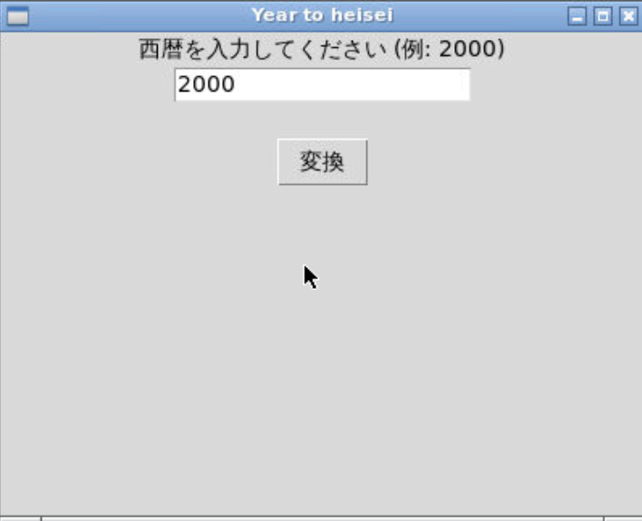
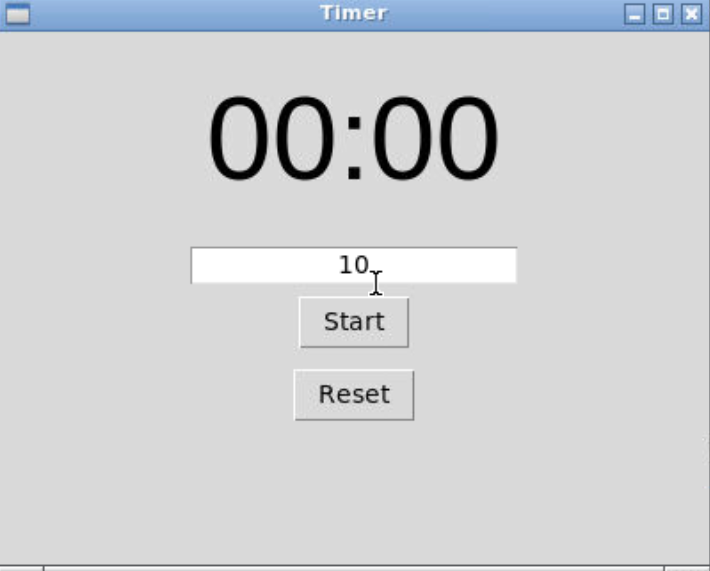
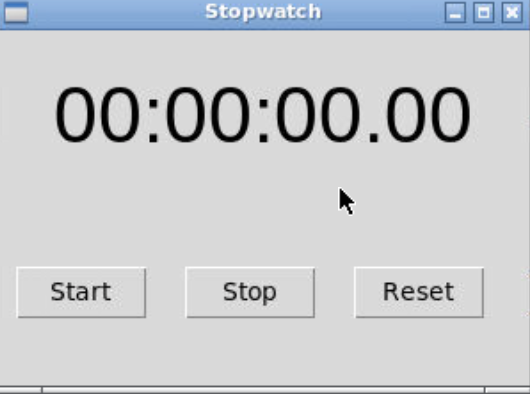

僕が作ったコード置き場です。大体pythonです
西暦を平成に変換するやつ
概要
一番最初に作ったやつ
作るものが見つからなかったときにpythonでなにか作ろうとした結果の産物
import tkinter
root = tkinter.Tk()
root.title("Year to heisei")
root.geometry("400x300")
labeltext = tkinter.Label(text="西暦を入力してください (例: 2000)")
labeltext.pack()
editbox = tkinter.Entry()
editbox.insert(tkinter.END, "2000")
editbox.pack()
result_label = tkinter.Label(text="")
result_label.pack()
def print_diff(event):
try:
year = int(editbox.get())
# 平成への変換
heisei = year - 1988
if heisei <= 0:
result_label.config(text="⚠️ 平成は1989年から始まります。")
return
elif heisei > 31:
result_label.config(text="⚠️ 平成は2019年(平成31年)までです。")
return
result_label.config(text=f"西暦{year}年 は 平成{heisei}年 です。")
except ValueError:
result_label.config(text="⚠️ 正しい数字を入力してください（例: 2001）")
btn = tkinter.Button(root, text="変換")
btn.bind("", print_diff)
btn.pack()
root.mainloop()
実行した画像
GUIタイマー
概要
二作目
作るものがないときにググって出てきたやつを作ってみた
import tkinter as tk
import time
root = tk.Tk()
root.title("Timer")
root.geometry("400x300") # Windowサイズ
time_label = tk.Label(root, text="00:00", font=("Helvetica", 48))
time_label.pack(pady=20)
entry = tk.Entry(root, justify="center")
entry.insert(tk.END, "10")
entry.pack()
running = False
remaining = 0
def start_timer():
global running, remaining
if not running:
try:
remaining = int(entry.get())
running = True
countdown()
except ValueError:
time_label.config(text="Please enter a Number")
def countdown():
global remaining, running
if running:
mins, secs = divmod(remaining, 60)
time_label.config(text=f"{mins:02d}:{secs:02d}")
if remaining > 0:
remaining -= 1
root.after(1000, countdown)
else:
running = False
time_label.config(text="Time Up!")
def reset_timer():
global running, remaining
running = False
remaining = 0
time_label.config(text="00:00")
start_button = tk.Button(root, text="Start", command=start_timer)
start_button.pack(pady=5)
reset_button = tk.Button(root, text="Reset", command=reset_timer)
reset_button.pack(pady=5)
root.mainloop()
実行した画像
ストップウォッチ
概要
第三作
タイマーの系列で作った
import tkinter as tk
import time
class StopwatchApp:
def __init__(self, root):
self.root = root
self.root.title("Stopwatch")
self.root.geometry("300x200")
self.running = False
self.start_time = 0.0
self.elapsed_time = 0.0
# 表示ラベル
self.time_label = tk.Label(root, text="00:00:00.00", font=("Helvetica", 32))
self.time_label.pack(pady=20)
# ボタン
self.start_button = tk.Button(root, text="Start", width=5, command=self.start)
self.start_button.pack(side="left", padx=10)
self.stop_button = tk.Button(root, text="Stop", width=5, command=self.stop)
self.stop_button.pack(side="left", padx=10)
self.reset_button = tk.Button(root, text="Reset", width=5, command=self.reset)
self.reset_button.pack(side="left", padx=10)
self.update_timer()
def format_time(self, elapsed):
hours = int(elapsed // 3600)
minutes = int((elapsed % 3600) // 60)
seconds = int(elapsed % 60)
milliseconds = int((elapsed - int(elapsed)) * 100)
return f"{hours:02}:{minutes:02}:{seconds:02}.{milliseconds:02}"
def update_timer(self):
if self.running:
now = time.time()
self.elapsed_time = now - self.start_time
self.time_label.config(text=self.format_time(self.elapsed_time))
self.root.after(10, self.update_timer) # 10msごとに更新（0.01秒）
def start(self):
if not self.running:
self.running = True
self.start_time = time.time() - self.elapsed_time # 再開時に継続時間を保持
def stop(self):
if self.running:
self.running = False
def reset(self):
self.running = False
self.elapsed_time = 0.0
self.time_label.config(text="00:00:00.00")
if __name__ == "__main__":
root = tk.Tk()
app = StopwatchApp(root)
root.mainloop()
実行した画像
